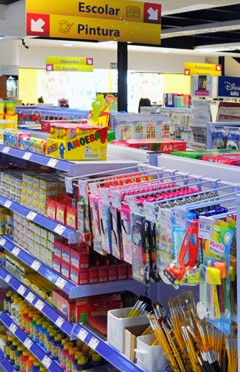

Quem Somos?
A Só Rabisco nasceu da paixão por papel, cores e criatividade. Acreditamos que grandes ideias começam com um simples rabisco, seja no caderno da escola, na agenda do trabalho ou naquele bloco de anotações cheio de sonhos.
Somos uma papelaria feita para inspirar. Trabalhamos com materiais escolares, itens de escritório e produtos criativos que deixam o seu dia mais organizado, produtivo e divertido.
Mais do que vender papel, queremos fazer parte das suas conquistas, projetos e momentos especiais.💛
